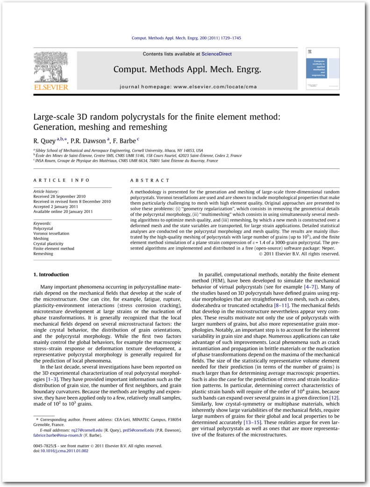
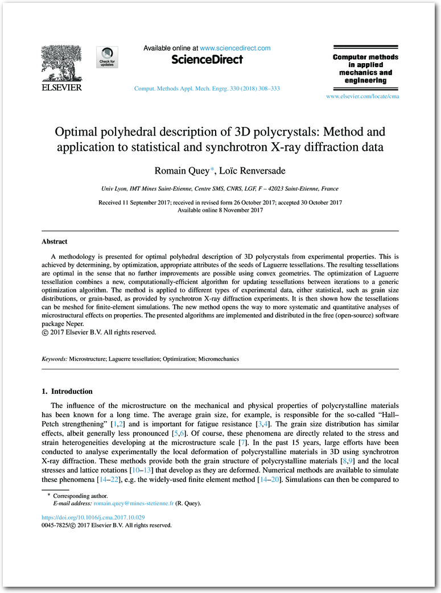

Reference Papers
The methods implemented in Neper are documented in these theory papers (click the image to download):

R Quey, PR Dawson and F Barbe, Large-scale 3D random polycrystals for the finite element method: Generation, meshing and remeshing, Computer Methods in Applied Mechanics and Engineering, vol. 200, pp. 1729-1745, 2011.

R Quey and L Renversade, Optimal polyhedral description of 3D polycrystals: method and application to statistical and synchrotron X-ray diffraction data, Computer Methods in Applied Mechanics and Engineering, vol. 330, pp. 308-333, 2018.

R Quey, A Villani and C Maurice, Nearly uniform sampling of crystal orientations, Journal of Applied Crystallography, vol. 51, pp. 1162-1173, 2018.